|
FC
Utrecht - Roda JC (1-1) 14 november
|
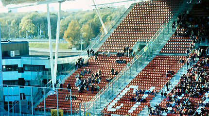
De Galgenwaard heeft mooie hoge tribunes maar het blijft een tochtbak.
Credits: RVF
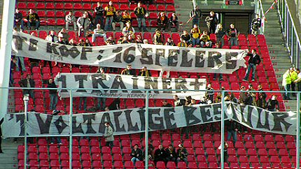
De meegereisde Rodasupporters hadden een duidelijke boodschap mee.
Credits:
www.fcutrechtnieuwegein.nl
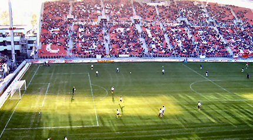
Veel zon en 19.600 toeschouwers waarvan circa 100 Rodasupporters.
Credits:
RVF
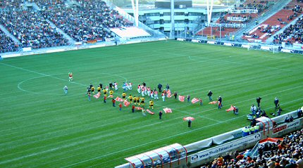
De bekende vlaggetjesparade bij opkomst van de spelers. In het Rodavak
is er dus een extra vlaggetjesparade.....
Credits:
RVF
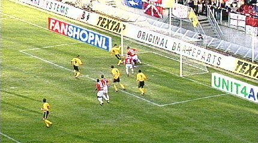
Vrije trap van Van Dijk wordt niet klemvast gehouden door doelman Ponk.
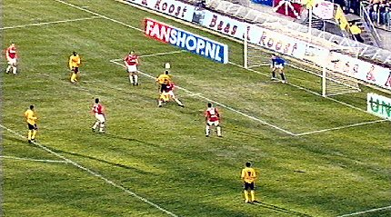
Cristiano kopt net over.
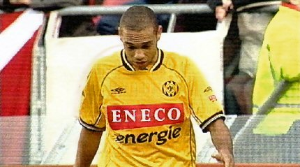
Hij kan het niet bevatten
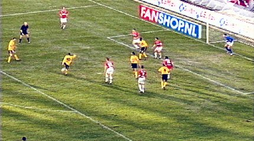
Te slap schot van Sergio.
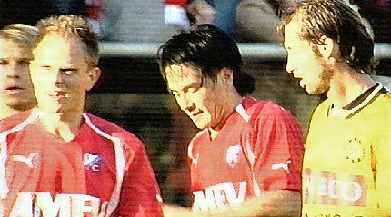
De bij Utrecht teruggekeerde Mols die een beetje overdreven bejubeld wordt
heeft een superkans gemist.
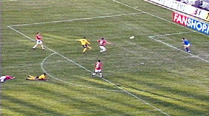
Sergio scoort met een mooi strak schot: 0-1 (43').
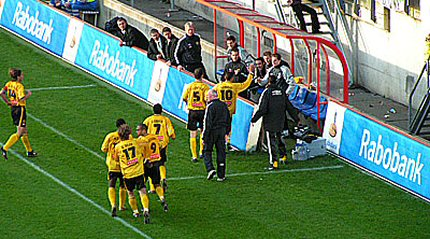
Vreugde maar wat staat Vloet daar uiterst links...?
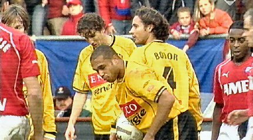
Bodor heeft Mols gehaakt waardoor Utrecht een vrijetrap krijgt op de rand
van de zestien.
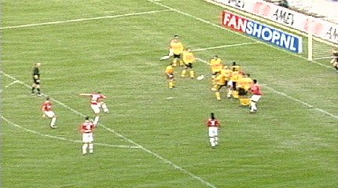
Van den Bergh schiet door de muur: 1-1, (66').
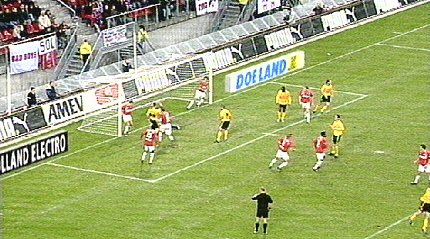
Utrecht wordt sterker en Roda probeert het gelijkspel te verdedigen. Sonko
moet er uit voor Luijpers. Bij een van de spaarzame kansen voor Roda gaat
Luijpers door op de keeper wat hem geel oplevert.....
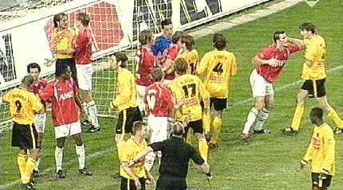
....en een drukbezocht opstootje. Roda schiet niks op met het gelijkspel en
zakt verder naar de 11e plaats.
©
Koempels Pleasure Dome
|